Brahmakamal has been conducting field trails, training coastal communities & providing R&D support to popularize seaweed cultivation in a commercial & remunerative way to leverage the sustainable usage of the vast coastline of India. Some of the key activities include:
Seaweed, Scientifically Known As Macroalgae, Comes In Several Types, With Each Type Having Unique Characteristics And Applications.
Brown Algae
Such As Kelp And Bladderwrack, Are The Largest And Most Complex.
Brown seaweed is abundant along the Indian coastline and is used for a wide range of purposes, such as producing fertilizers, animal feed, and even biofuel due to its high carbohydrate content.
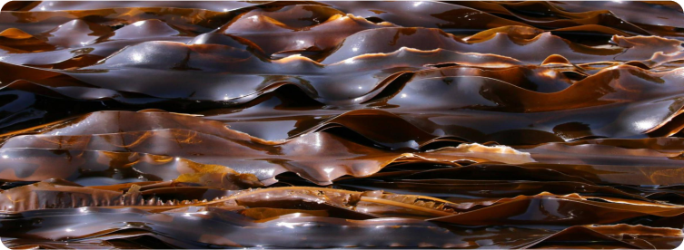
Red Algae
Like Nori And Dulse, Are Often Used In Culinary Applications.
Red seaweed is prized for its agar content, a valuable substance used in various industries, including food processing, pharmaceuticals, and cosmetics. It is often found in regions with brackish water.
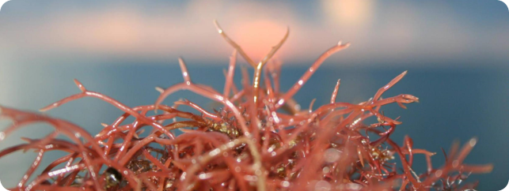
Green Algae
Similar To Sea Lettuce, Are Usually Smaller And Found In Shallow Waters.
Green seaweed is easily recognizable by its vibrant green color. Rich in vitamins and minerals, it is commonly used in Indian cuisine, particularly in coastal regions, to prepare dishes like "sagar laddu."
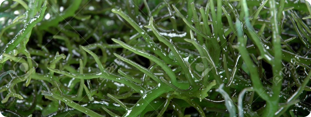
Varieties Found In India:
India boasts a rich diversity of seaweed species, with some of the most prominent varieties being:
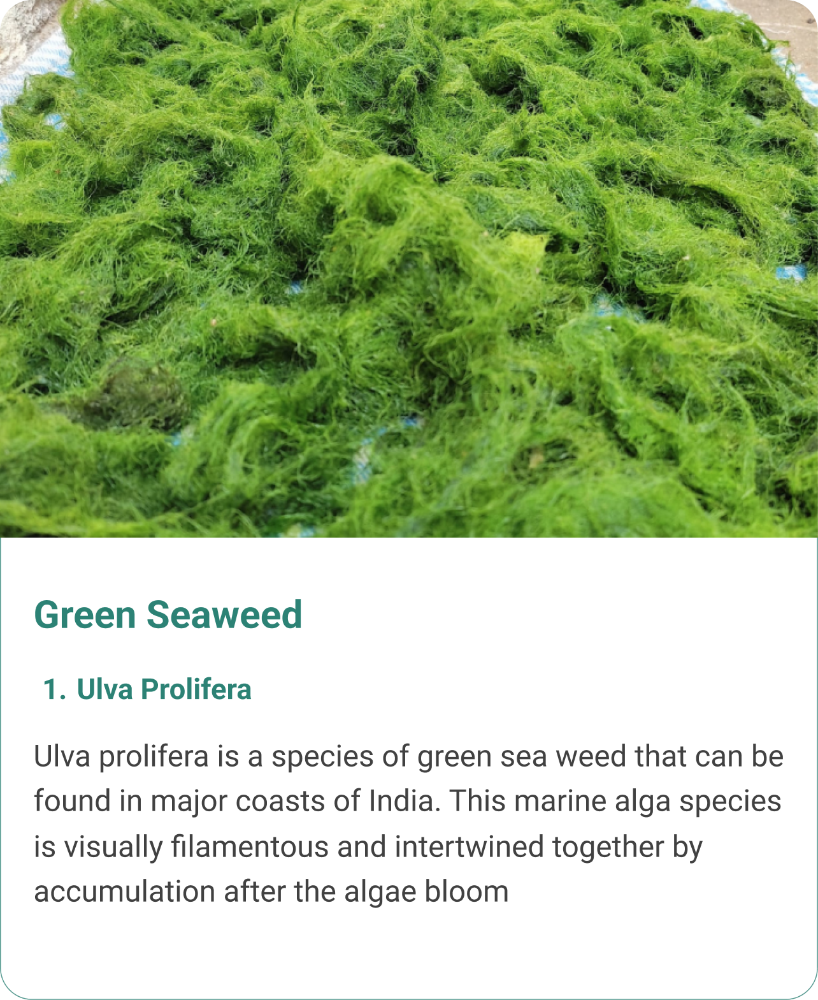
Cultivation Methods in Odisha:
Seaweed cultivation in Odisha can be done using various methods, including:
Raft Farming
Longline Cultivation
Offshore Cultivation
Maintenance and Harvesting
Processing and Marketing
Research and Training
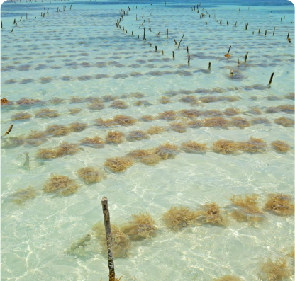
Raft Farming: Raft farming involves
suspendinglines or nets with seaweed spores in the water. These rafts can be set up inshallow or deeper waters, depending on the seaweed species.
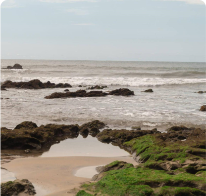
Offshore Cultivation: In deeper ... waters, offshoreseaweed farms can be established. These can be more suitable for certainspecies and provide opportunities for scaling up production.
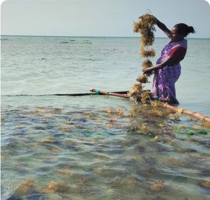
Longline Cultivation: Longlines are ...ropes or linesanchored to the seabed with seaweed attached. They can be used to cultivate arange of seaweed varieties.
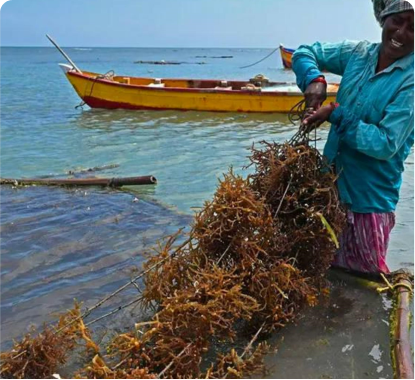
Maintenance and Harvesting:
Regular monitoring andmaintenance of seaweed farms are essential. This includes cleaning the seaweedof any fouling organisms and ensuring optimal conditions for growth. Harvestingcan be done once the seaweed reaches a suitable size, depending on the intendeduse.
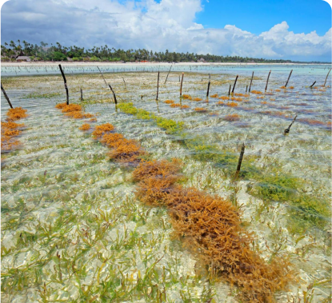
Research and Training: Continuous
research andtraining programs are important to improve cultivation techniques, select thebest species, and enhance productivity. Collaboration with scientificinstitutions and fisheries departments can provide valuable support.
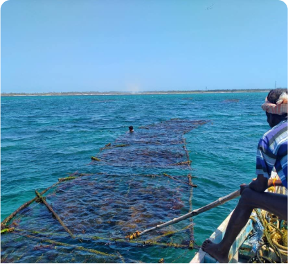
Processing and Marketing: After harvesting,... theseaweed can be processed into various products such as food ingredients,fertilizers, cosmetics, or pharmaceuticals. Establishing processing facilitiesand marketing channels is crucial to make the cultivation venture economicallyviable.
seaweed cultivation, in Odisha offers a promising opportunity for economic development, reduced pressure on wild seaweed populations, and environmental benefits.
The state's extensive coastline, favorable environmental conditions, and increasing demand for seaweed-based products make it an ideal location for seaweed cultivation. By implementing suitable cultivation methods and focusing on research and development, Odisha can tap into the potential of this underwater resource.
Our Gallery
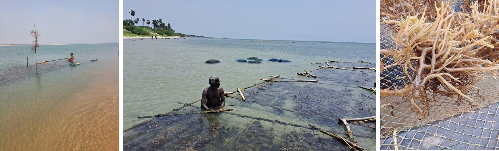
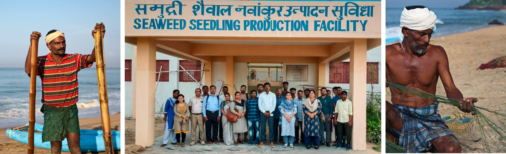
Contact
+91 82490 37558
Email
contact@bkresearch.in
Location
Brahma Kamal Research LLP KIIT-TBI, Room No. 214 KIIT Campus No. 11 KIIT University,
Bhubaneswar - 751024